AnyPortrait > 메뉴얼 > 마스크 체인
마스크 체인
1.6.0
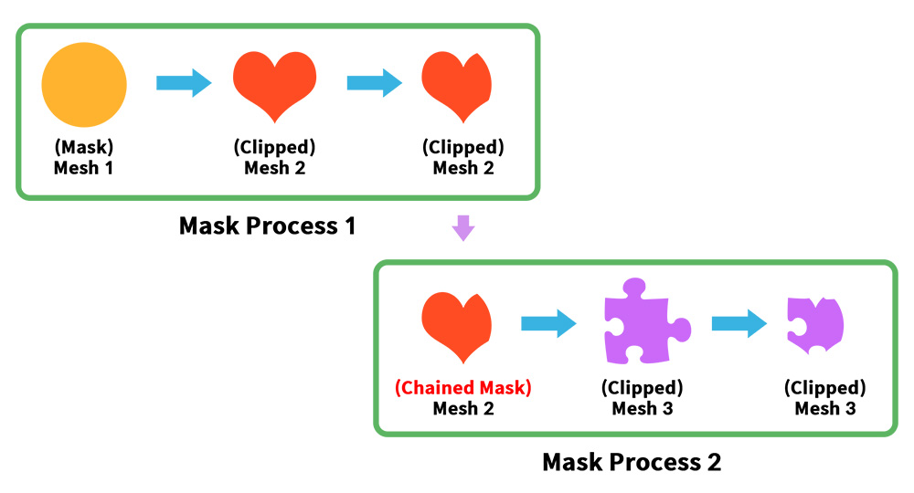
클리핑 렌더링을 하고자 할 때, 마스크를 전달하여 클리핑 렌더링을 하는 처리 과정이 연속으로 수행되어야 하는 경우도 있을 것입니다.
다시 말해, 이 페이지에서 다루는 것은 "클리핑된 메시"가 또 다른 메시로의 "마스크 메시"가 되는 경우입니다.
위 이미지에서 보면, "Mesh 1"이 마스크 메시로서 "Mesh 2"를 클리핑하는데, 클리핑된 "Mesh 2"가 마스크로서 "Mesh 3"를 클리핑하고 있습니다.
마스크 처리 과정이 연속적으로 수행되는 이것을 AnyPortrait에서는 "마스크 체인 (Mask Chain)"이라고 부릅니다.
이 페이지는 마스크 체인이 필요한 이유와 마스크 렌더 순서에 대해서 설명합니다.
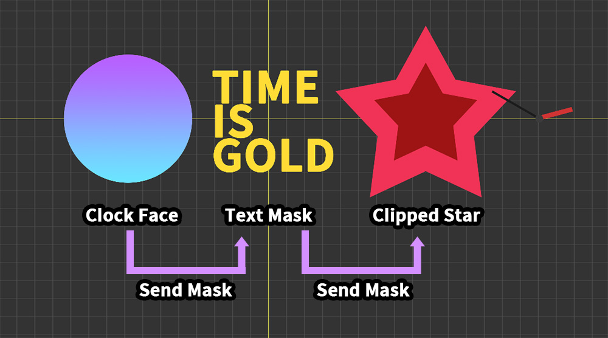
클리핑 마스크가 연속적으로 적용이 되는 경우를 재현하기 위해서 위와 같은 예제를 준비했습니다.
위 예제는 "별모양 문양이 들어간 텍스트가 그려진 시계"입니다.
먼저, 시계판 메시("Clock Face")를 마스크로 삼아서 텍스트 메시("Text Mask")가 클리핑됩니다.
그리고 이어서 클리핑된 텍스트 메시("Text Mask")가 마스크가 되어서 별 모양 메시("Clipped Star")를 클리핑합니다.
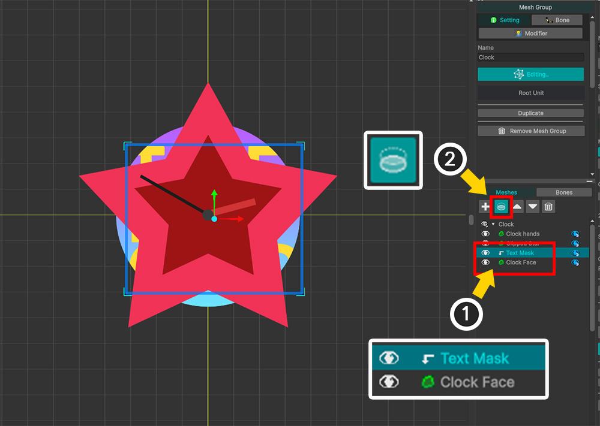
이것을 어떻게 구현할지 잠시 생각을 해보면, 기존의 클리핑 마스크를 하면 예쁜 시계가 구현이 될 것 같기도 합니다.
클리핑 마스크를 이용하여 제작을 하면 어떻게 보여질지 시도해봅시다.
(1) "Text Mask" 메시를 선택합니다.
(2) 클리핑 마스크 버튼을 눌러서 "Clock Face" 메시로부터 클리핑이 되도록 만듭니다.
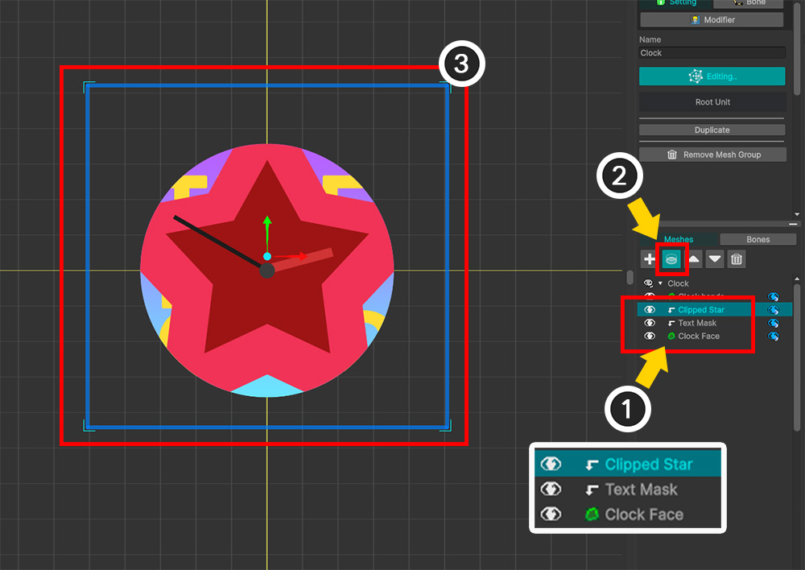
(1) 이어서 "Clipped Star" 메시를 선택합니다.
(2) 클리핑 마스크 버튼을 눌러서 중첩된 클리핑이 되도록 설정합니다.
(3) 완성된 결과를 보면 "Clipped Star" 메시가 텍스트가 아닌 시계판 전체 영역으로 클리핑이 되는 것을 볼 수 있습니다.
의도한 것은 "별 무늬가 있는 텍스트가 시계판에 그려진 것"이었지만, 이 방법으로는 제대로 구현이 되지 않습니다.
이 경우에 마스크 체인이 필요합니다.
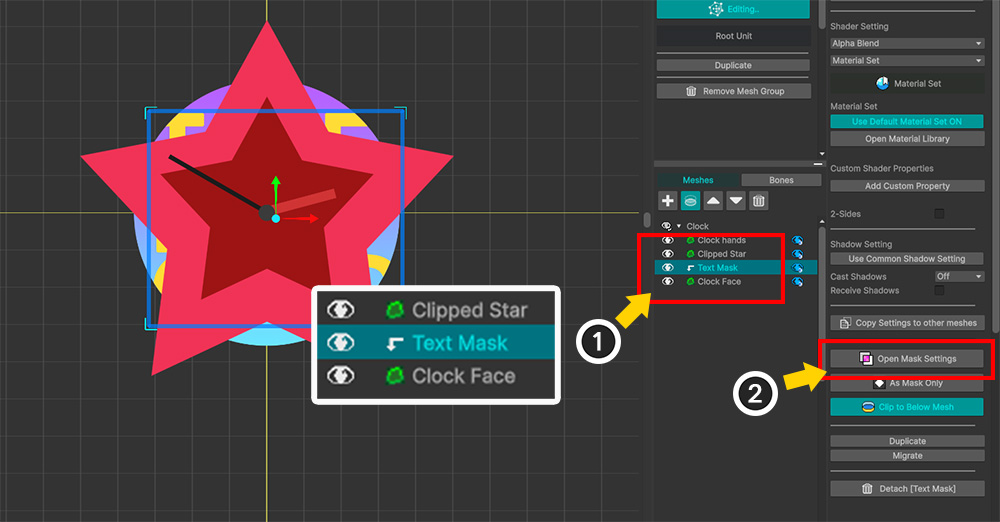
(1) "Clipped Star" 메시의 클리핑 마스크를 해제하고, 오직 "Text Mask" 메시만 "Clock Face" 메시로의 클리핑이 되도록 설정합니다.
(2) Open Mask Settings 버튼을 누릅니다.
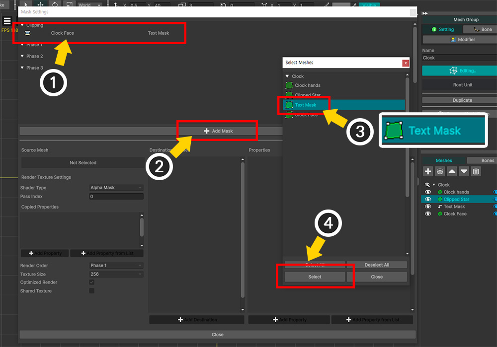
(1) "Clock Face" 메시가 마스크가 되는 클리핑 마스크 데이터가 등록되어 있는 것을 볼 수 있습니다.
(2) Add Mask 버튼을 누릅니다.
(3) 두번째 마스크가 되는 "Text Mask" 메시를 선택합니다.
(4) Select 버튼을 누릅니다.
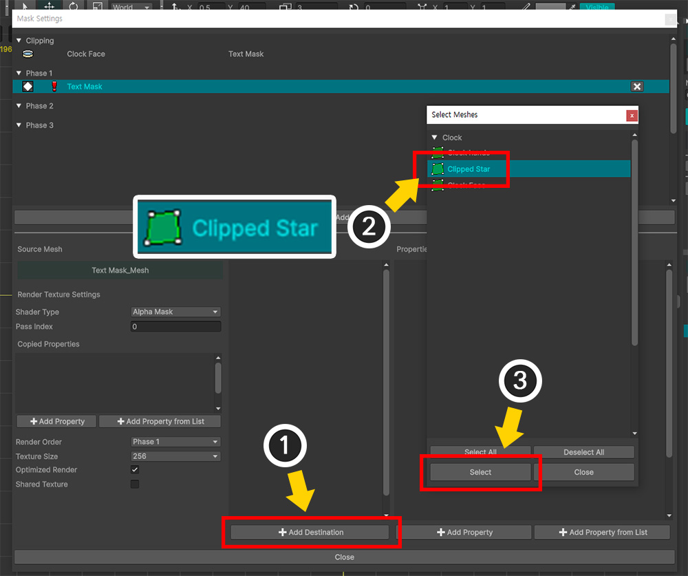
(1) Add Destination 버튼을 누릅니다.
(2) "Clipped Star" 메시를 선택합니다.
(3) Select 버튼을 누릅니다.
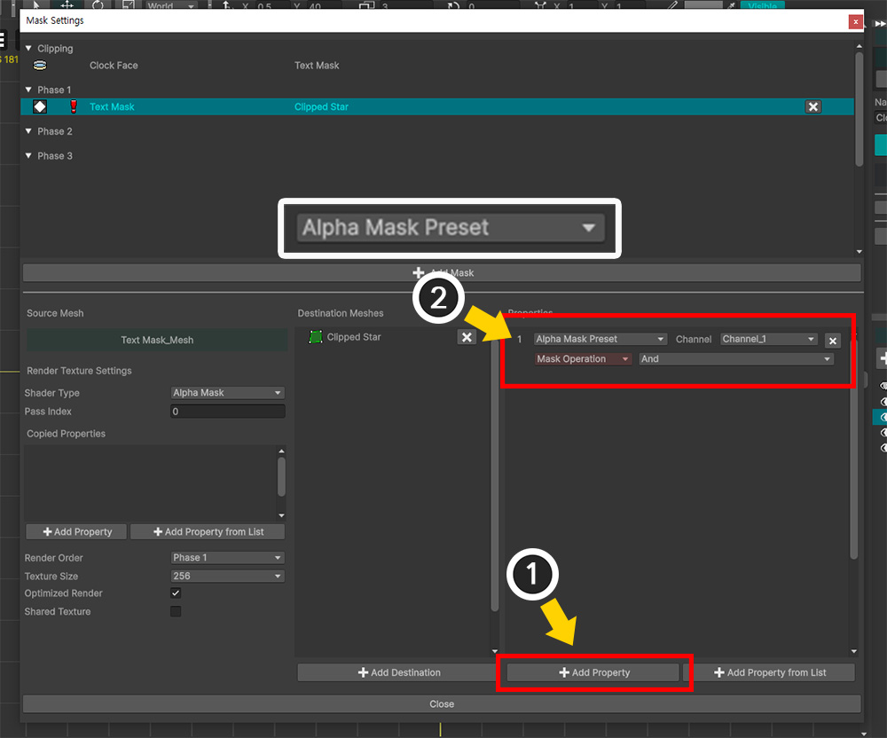
(1) Add Property 버튼을 누릅니다.
(2) "Alpha Mask Preset" 타입의 프로퍼티가 추가되었습니다.
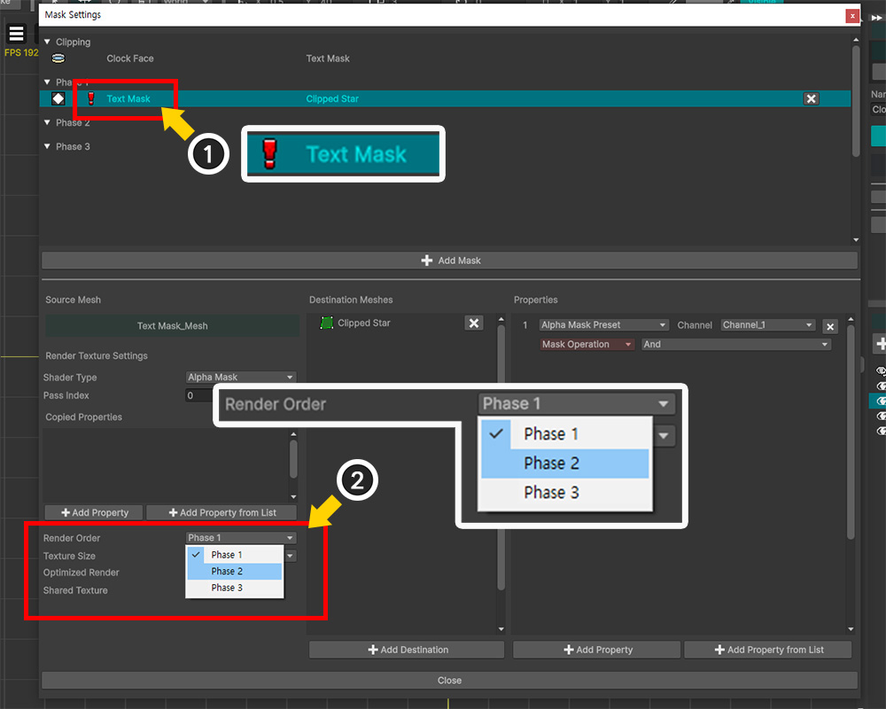
이제 "Clock Face > Text Mask > Clipped Star"로 이어지는 연속된 마스크 데이터가 완성되었습니다.
이 상태가 마스크 체인이며, "Text Mask" 메시는 "체인된 마스크"가 됩니다.
(1) 그런데 "Text Mask" 메시의 마스크 데이터 항목에 경고 아이콘이 등장했습니다.
이 경고 아이콘은 마스크 체인이 발생지만 정상적으로 동작하지 않을 수 있다는 것을 의미합니다.
마스크 체인에서 고려해야하는 가장 중요한 것은 "마스크가 렌더링 되는 순서"입니다.
이 예제에서 정상적인 경우는 "Clock Face > Text Mask > Clipped Star" 순서대로 마스크가 생성되어 전달되는 것입니다.
그런데 순서가 잘못되어 "Text Mask > Clipped Star"가 먼저 수행되고 "Clock Face > Text Mask"가 나중에 수행되면 클리핑 오류가 발생할 가능성이 있습니다.
(2) 이것을 해결하기 위해서 마스크 데이터를 선택하여 Render Order의 값을 "Phase 2"로 변경합니다.
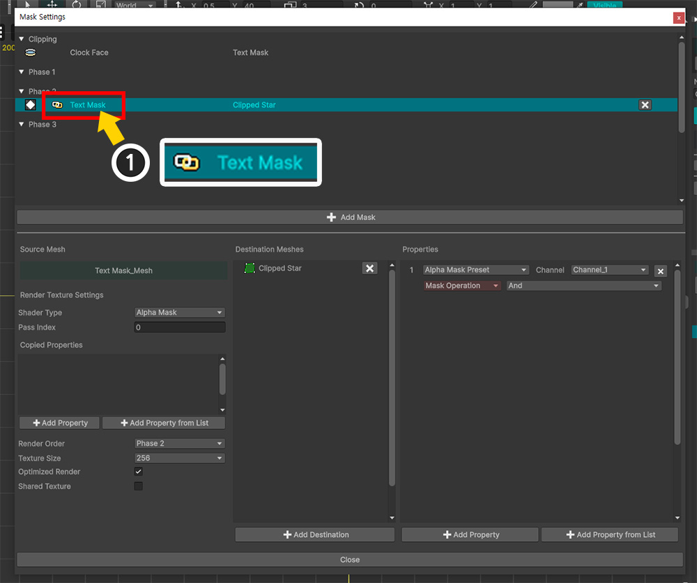
(1) 리스트에서 마스크 데이터가 "Phase 2"로 이동했으며, 경고 아이콘이 "체인" 아이콘으로 바뀐 것을 볼 수 있습니다.
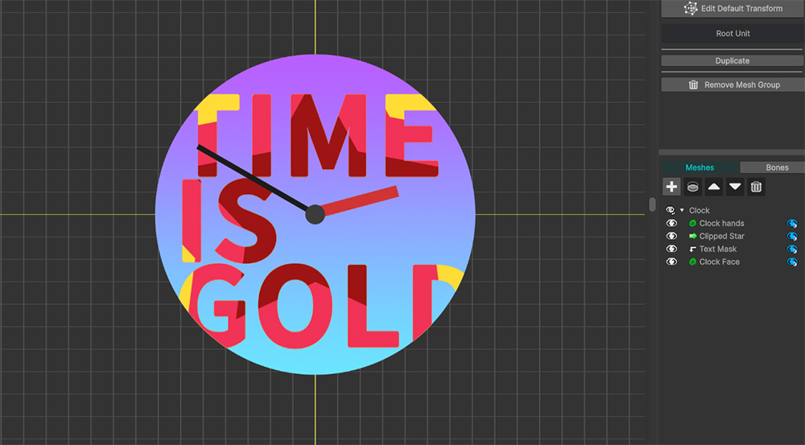
마스크 설정 다이얼로그를 닫고 렌더링 결과를 확인해봅시다.
의도한 대로 렌더링이 되어 예쁜 시계가 완성된 것을 볼 수 있습니다.

유니티 씬에서 테스트를 하면, 렌더링은 정상적으로 되지만 마스크의 품질이 낮은 것을 볼 수 있습니다.
이것은 마스크 체인이 발생하면 클리핑 마스크의 "렌더 텍스쳐 품질 최적화" 기능이 동작하지 않습니다. (관련 페이지)
렌더 텍스쳐에서 렌더 텍스쳐로의 렌더링이 발생하기 때문에 "품질 최적화" 과정에서 필요한 "화면 좌표계"가 일정하지 않기 때문입니다.
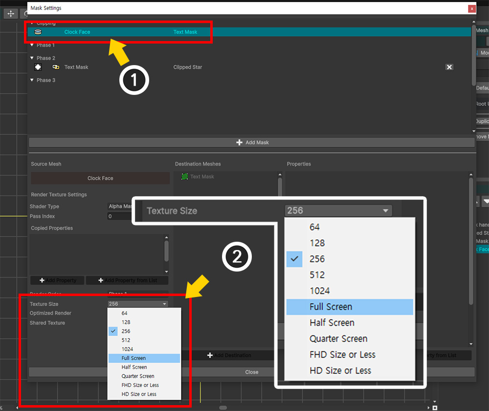
이 경우, 마스크 품질을 높이기 위해서는 마스크 체인과 관련된 모든 마스크 데이터의 렌더 텍스쳐 해상도를 조절할 필요가 있습니다.
(1) 마스크 설정 다이얼로그를 열고 마스크 체인의 앞 부분에 해당하는 "Clock Face"의 클리핑 마스크 항목을 선택합니다.
(2) Texture Size의 값을 적당히 큰 값으로 설정합니다.
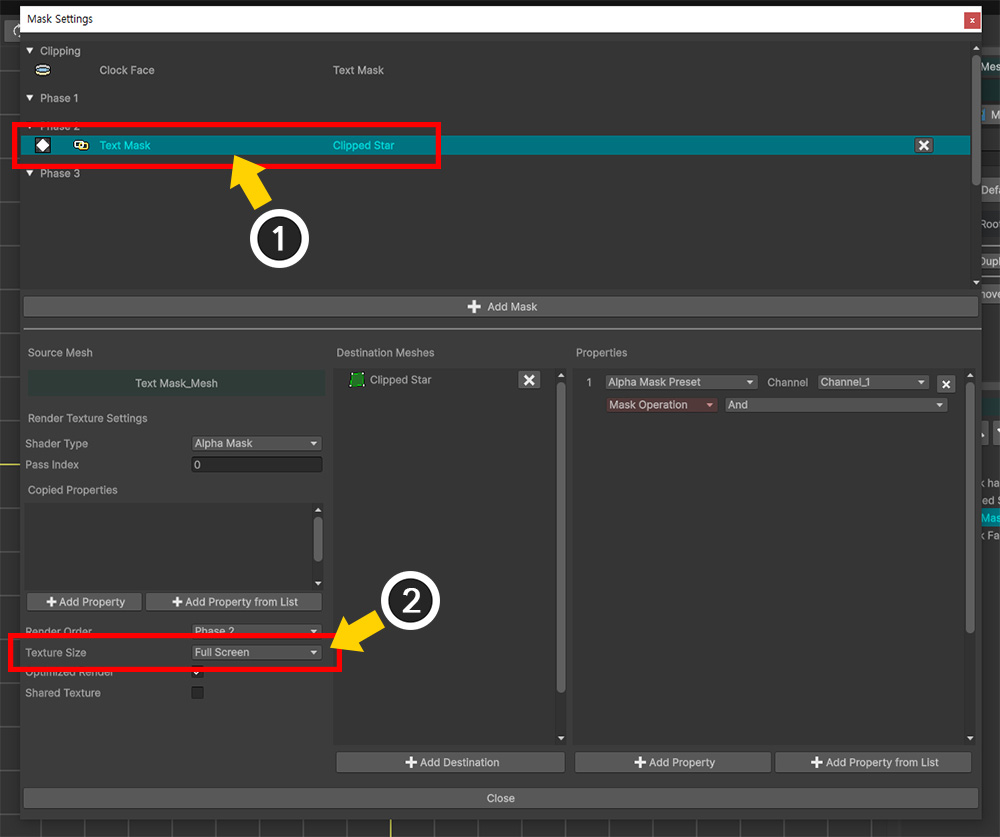
(1) 이어서, "Text Mask" 메시의 마스크 데이터를 선택합니다.
(2) 마찬가지로 Texture Size의 값을 적당히 큰 값으로 선택합니다.
여기서는 Optimized Render가 체크되어 있지만, 마스크 체인이 발생한 마스크 데이터에서는 해당 옵션이 무시됩니다.
유니티 씬으로 돌아가면 마스크의 품질이 좋아진 것을 볼 수 있습니다.
마스크가 렌더링되는 순서
마스크 데이터는 "커맨드 버퍼(Command Buffer)"에 의해서 실행되어 렌더 텍스쳐로 렌더링을 수행합니다.
"커맨드 버퍼가 실행되는 순서"가 곧 "마스크 데이터가 실행되는 순서"이기도 합니다.
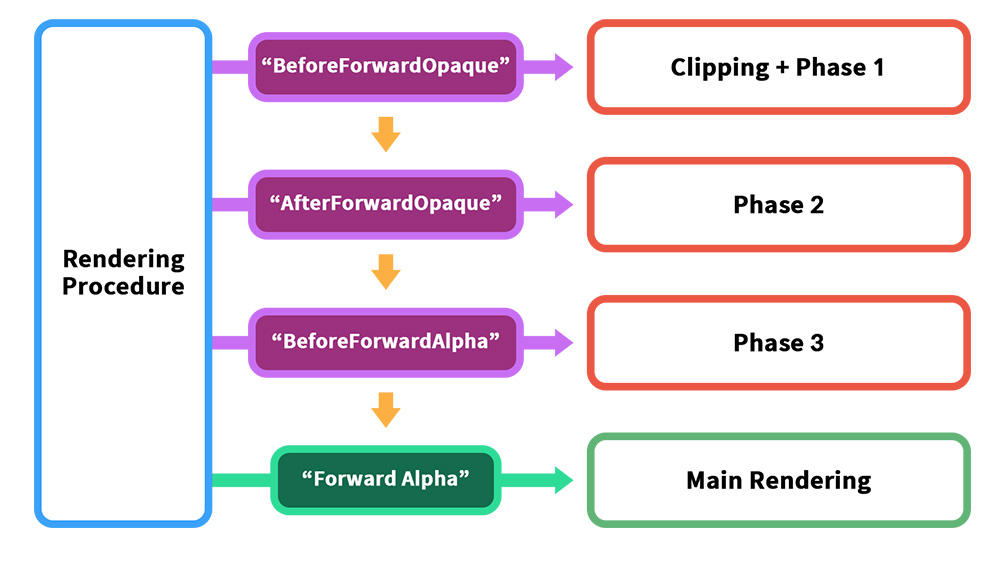
마스크가 처리되는 시점, 즉 커맨드 버퍼가 실행되는 시점은 렌더링 절차의 특정 이벤트에 맞추어 구분됩니다.
AnyPortrait의 메시들은 "Transparent" 쉐이더로 렌더링되므로, 그 이전의 렌더 이벤트인 "Before Forward Opaque", "After Forward Opaque", "Before Forward Alpha" 중 하나에서 마스크가 처리됩니다.
"페이즈 (Phase)" 옵션은 이 3개의 렌더 이벤트를 지칭합니다.
동일한 페이즈 내에서는 커맨드 버퍼의 실행 순서가 모호하기 때문에 마스크 체인의 렌더 순서 오류가 발생할 수 있습니다.
그래서 렌더 순서 오류를 해결하기 위해서는 페이즈를 명확히 지정할 필요가 있는 것입니다.
기존의 클리핑 마스크는 마스크 데이터의 페이즈 1과 동일한 시점인 "Before Forward Opaque"에서 실행됩니다.
따라서 클리핑 마스크와의 마스크 체인이 발생했다면, 최소한 페이즈 2에서 실행되도록 설정해야합니다.
다만, 위 사양은 "Built-In 렌더 파이프라인"에 해당하며, "URP"에서는 "Before Rendering" 이벤트로 통합됩니다.
이때는 내부에서 마스크 처리 순서가 페이즈 단위로 매번 정렬됩니다.
결과는 동일합니다.
마스크가 업데이트 되는 것과 렌더 텍스쳐로 렌더링이 되는 것은 내부적으로 서로 다른 동작입니다.
마스크가 업데이트 되는 것은 모디파이어 및 애니메이션의 업데이트 로직과 관련이 있으며, 렌더 텍스쳐로 렌더링되고 마스크 데이터가 전송되는 것은 렌더링 이벤트와 관련이 있습니다.
그래서 마스크와 관련된 이슈가 발생했을 때, "업데이트"에 의한 이슈와 "렌더링"에 의한 이슈는 구분되어야 합니다.
이 페이지에서 다루는 문제는 "렌더링"에 대한 이슈입니다.
다른 스크립트와의 업데이트 순서에 의한 이슈는 다음의 메뉴얼에서 다루고 있습니다.
- 다른 에셋과 연동시 실행 순서 문제
마스크 체인 순서가 올바르지 않는 경우
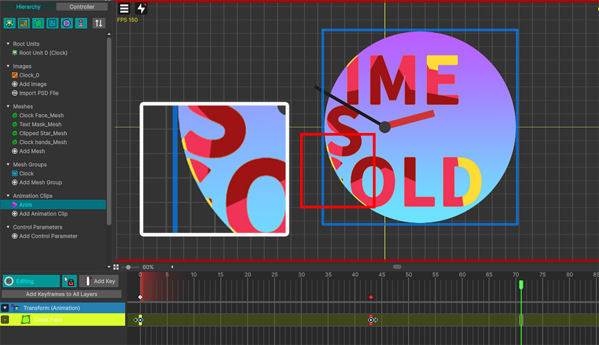
마스크 체인에서 Render Order값이 적절하지 않다 하더라도 의외로 렌더링 결과는 꽤 괜찮아보일 수 있습니다.
렌더링은 매프레임마다 수행되기 때문에, "이전 프레임에서의 렌더 텍스쳐"가 반영되어서 렌더링 오류를 찾기 어려울 수 있습니다.
하지만 렌더링 오류는 분명히 존재하며, 이것은 메시가 등장하는 순간이나 메시가 빠르게 움직이는 애니메이션에서 찾을 수 있습니다.
공유 텍스쳐에서 렌더 순서가 일치하지 않는 경우
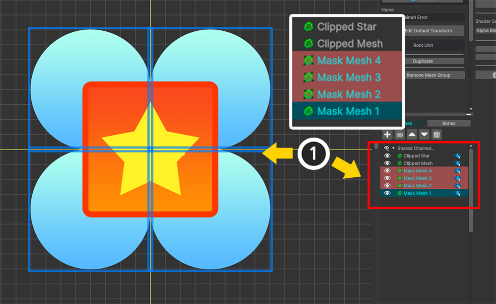
공유 텍스쳐 (관련 페이지)에서 만약 각각의 마스크 데이터의 Render Order가 일치하지 않는다면 어떤 일이 발생하는지 알아봅시다.
(1) 4개의 마스크 메시가 있는 예제입니다.
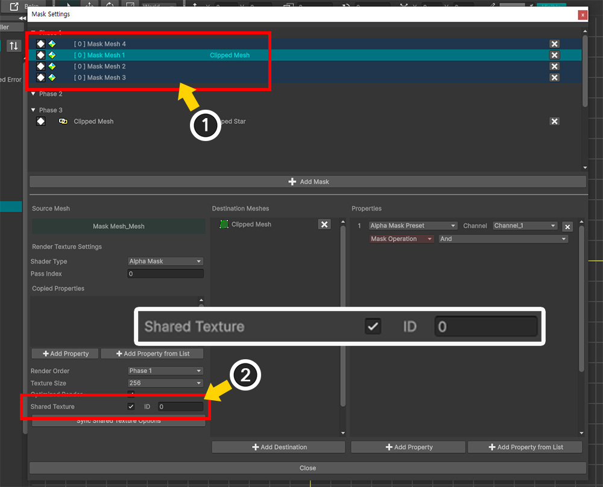
(1) 4개의 메시들에 대한 각각의 마스크 데이터가 존재합니다.
(2) 이 마스크 데이터들의 Shared Texture 옵션이 활성화 되어서 동일한 공유 텍스쳐를 대상으로 마스크를 렌더링합니다.
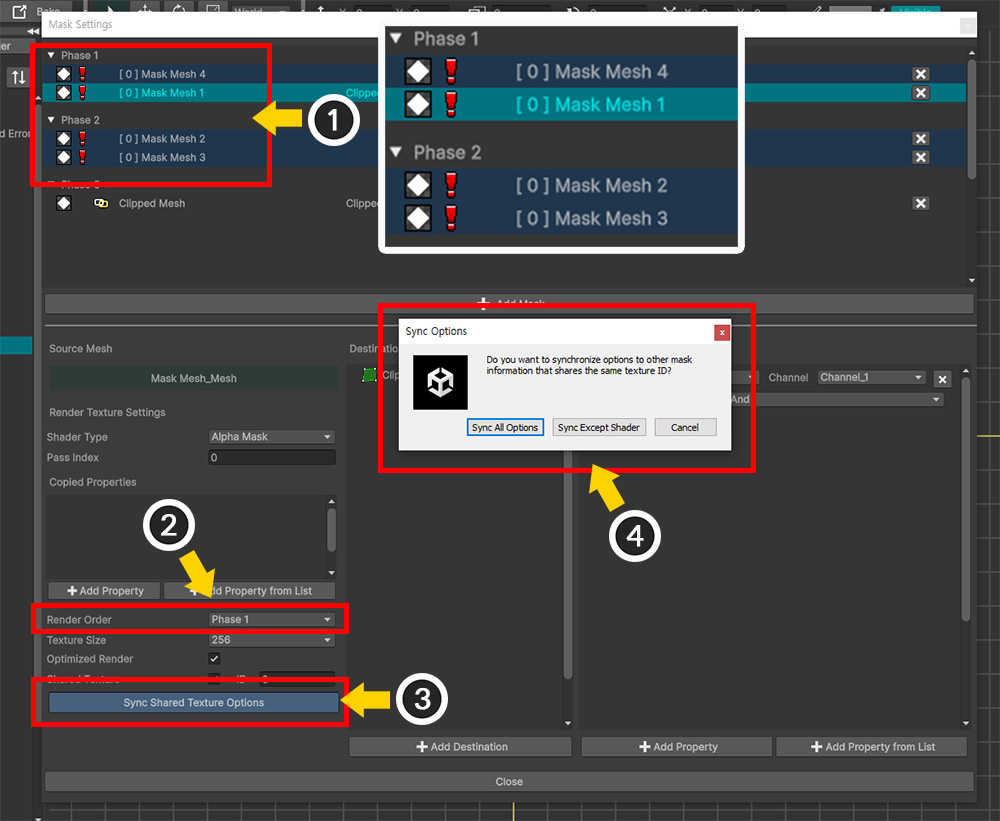
(1) 그런데 만약 이 마스크 데이터들 중 일부의 Render Order가 다른 마스크 데이터와 일치하지 않는다면, 위와 같이 경고 아이콘이 발생합니다.
공유 텍스쳐는 동일한 페이즈에서 마스크를 일괄 생성해야하는데, 마스크 데이터마다 다른 페이즈를 갖는 것은 동작을 모호하게 만들기 때문입니다.
(2) 문제를 해결하기 위해서 마스크 데이터 중 하나를 선택하여 Render Order를 설정합니다.
(3) Sync Shared Texture Options 버튼을 누릅니다.
(4) 동기화 메시지가 나타나면 Sync All Options 버튼을 누르거나 Sync Except Shader 버튼을 눌러서 공유 텍스쳐의 모든 마스크 데이터들의 옵션을 일치시킵니다.